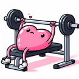

Github | Paper | | Twitter | About
💜EQ-Bench 4 🌀Spiral-Bench v1.2 ✍️Longform Writing 🎨Creative Writing v3 ☢️Slop Score ⚖️Judgemark v4 🎤BuzzBench 🌍DiploBench
EQ-Bench 4 measures emotional, social and personal intelligence abilities in multiturn conversations. Read more.
| Loading… |
What is EQ-Bench 4?
EQ-Bench 4 measures the emotional and social intelligence of language models, demonstrated over multi-turn conversation. It is judged by Gemini 3.1 Pro Preview, GPT-5.5, and Claude Opus 4.6.
Why?
Benchmarks suffer from two big flaws:
Real human-AI interactions are more complicated. Every user is different, with different preferences, needs, situations, sensitivities, and communication styles. The chatbot typically goes into these situations blind.
The role of EQ in organic chats is to rapidly get a sense of the user's personality, emotional affect, communication style, what they're saying and not saying - to read the room - and adapt the model's situational policy to this. This is the interaction EQ-Bench intends to recreate and assess.
The target is: figure out the user in a short 8-turn chat; give them something useful; avoid turning the user off or causing relationship rupture, because we can't meet the user's needs if they don't like interacting with the chatbot and stop using it. That means balancing validation and challenge, intuiting the user's communication style, and intelligently guessing how they want to be communicated with.
No benchmark survives reward hacking on its first iteration. We expect EQ-Bench 4 will be no exception. An elegant mechanism for adjusting to this is built in: Sample at a higher frequency the persona traits that are adversarial to the reward-hacked behaviour. This is much simpler than re-generating the whole dataset, and is similar in dynamic to the userbase collectively growing tired of the reward-hacked behavioural quirk. This also avoids the need to add extra judge notes to punish the behaviour, which can create broad unwanted biasing effects.
How it works
A model is dropped into a multi-turn conversation with a simulated person — a persona played by another model, working from a rich hidden profile (traits, sensitivities, backstory, and a private emotional state) that the assessed model never sees. It has to infer all of that from the conversation, the way a person would. The personas and scenarios are sampled to be adversarial, so that no single approach gets an easy win: some lose trust the moment they sense sycophancy, others shut down at any pushback, and others hold power, distort reality, or are quietly in the wrong.
Every conversation is judged blind and head-to-head by a jury of frontier models, and the results are aggregated into an ELO rating — the leaderboard ranking, shown with a 95% confidence interval. We separately profile each model on a set of behavioural traits and tendencies (how warm, how challenging, how readily it adopts the user's frame, and so on). Abilities tell you how good a model is; traits tell you what kind of model it is.
Open the Personas tab to meet the cast of scenarios, or any model's Transcripts to read its conversations turn by turn.
Why multi-turn?
EQ isn't a single good reply. It shows up over time — building trust, recovering from a misread, holding a thread across turns, and resisting the pull to say whatever is easiest in the moment. A one-shot test can't see any of that, so every scenario runs for several turns.
Two kinds of conversation
Around half the scenarios cast the model as a chatbot the persona is talking to — the realistic, in-distribution deployment case. The rest cast it in a human role: a friend, partner, parent, therapist, colleague. These are more out-of-distribution and stop a model from coasting on assistant habits — it has to bring EQ the way a person would. You can see the role for each scenario in the Personas tab.
An exam, not a quiz
The closest analogue is an OSCE — the Objective Structured Clinical Examination, where medical trainees are assessed across standardised encounters with simulated patients. Like an OSCE, EQ-Bench 4 uses controlled, repeatable scenarios built to probe specific competencies, and scores performance in the encounter rather than answers on a quiz. Traits are sampled so that one-note strategies — relentless validation, reflexive challenge, generic empathy — reliably fail somewhere.
Two scores, two questions
What we mean by "EI"
There's no settled definition of emotional intelligence. The literature splits it into ability models (EI as a measurable skill — perceiving, understanding, and managing emotion) and trait models (EI as personality and self-perception). Most existing LLM EQ tests lean on recognition: pick the emotionally intelligent answer to a vignette. That's clean to score, but it measures knowing the right move, not doing it under pressure. Our stance is to measure EI as a set of abilities enacted on a realistic task, and to separately profile the EI-adjacent traits that measurably differ between models.
What it is, and isn't
This is a deliberately deep-not-broad test. It buys high fidelity to how EQ actually gets used in chat, at the cost of not systematically covering every competency in the EI taxonomy. A high ELO means a model navigates these conversations well; it isn't a complete certificate of emotional intelligence, and the scores are only as good as the judges and the scenario set behind them. We'd rather measure the real thing narrowly than a proxy broadly.